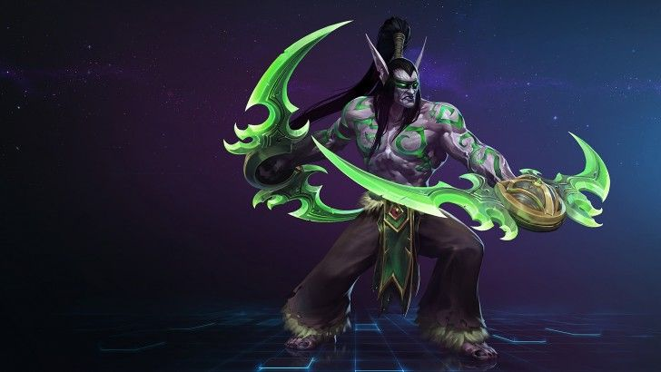

HEROES OF THE STORM

Bienvenido al nexo
¡En este reino entre reinos, todo es posible! Elegid entre docenas de héroes legendarios del panteón de Blizzard, personalizad sus talentos y habilidades en el momento y luchad en una amplia variedad de innovadores campos de batalla. Este no es un MOBA cualquiera: ¡es Heroes of the Storm!.
FUNCIONES
Los héroes se dividen en las siguientes categorías para que podáis encontrar la función que mejor encaje con vuestro estilo de juego:
TANQUE
Los tanques son formidables gigantes que protegen a su equipo absorbiendo los ataques del enemigo y frenando su avance.
AGRESOR
Los agresores son duros luchadores capaces también de repartir una cantidad moderada de daño.
APOYO
Los héroes de apoyo aportan principalmente mejoras y otros beneficios a sus aliados.
FUNCIONES
Los héroes se dividen en las siguientes categorías para que podáis encontrar la función que mejor encaje con vuestro estilo de juego:
SANADOR
Los sanadores se centran sobre todo en curar a sus aliados y mitigar el daño..
ASESINO CUERPO A CUERPO
Son héroes ofensivos que infligen gran cantidad de daño y lo hacen acercándose mucho a sus objetivos.
ASESINO A DISTANCIA
Son héroes frágiles con la capacidad de infligir una gran cantidad de daño desde lejos.
Disfrutad de más de una docena de campos de batalla únicos con gran variedad de objetivos, diseños y temáticas. Aquí tenéis unos cuantos ejemplos de lo que podéis encontrar en los muchos reinos del Nexo:
MODOS
Encontrad el modo de juego ideal para vosotros. ¡Hay mil formas de jugar!
PARTIDA RAPIDA
¡Elegid un héroe y entrad en combate contra otros jugadores en un campo de batalla elegido al azar!
NO CLASIFICATORIA
Toda la experiencia de las partidas clasificatorias sin la presión que conllevan. Preseleccionad y descartad héroes como en la Liga de la Tormenta sin que vuestro rango se vea afectado.
VERSUS IA
Elegid un héroe y una dificultad, y enfrentaos a rivales controlados por la IA.
MODOS
Encontrad el modo de juego ideal para vosotros. ¡Hay mil formas de jugar!
PERSONALIZADA
Heroes of the Storm a vuestra manera. ¡Cread una sala con ajustes personalizados en campos de batalla y selección/descarte de héroes, entre otras cosas, e invitad a vuestros amigos!
TRIFULCAS-ARAM
¡ARAM al estilo del Nexo! Elegid entre tres héroes y luchad en un caótico campo de batalla de un solo camino..
CLASIFICATORIA
Venced a vuestros enemigos y subid de rango hasta llegar a Gran Maestro en solitario o en grupo.

Los héroes son personajes de universos de Blizzard Entertainment como Diablo, Overwatch, StarCraft, The Lost Vikings and Warcraft y están divididos en cuatro roles diferentes: asesinos, guerreros, de apoyo, y especialistas. Actualmente hay 88 héroes.